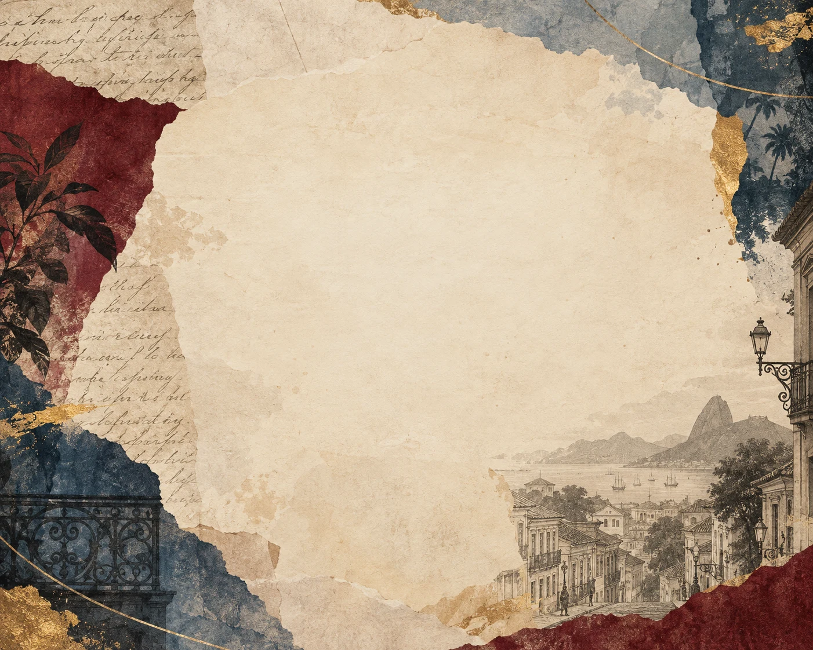

Olhar crítico
A obra troca a idealização romântica por ironia, observação psicológica e atenção às relações de interesse, prestígio e poder.
romance · Machado de Assis · 1881
Um narrador que já morreu volta para contar a própria vida — com humor, vaidade e uma memória que nunca é tão inocente quanto parece.

01 / a obra
Brás Cubas narra depois de morto. Em vez de começar pelo nascimento, abre o relato com a própria morte e percorre lembranças da infância à vida adulta. O resultado não é uma autobiografia neutra: o narrador escolhe o que contar, interrompe o fio da história e conversa diretamente com quem lê.
Entre amores, projetos políticos e ambições que não se realizam, o livro transforma a memória de um homem da elite carioca em uma observação irônica sobre sua época — e sobre a maneira como cada pessoa tenta justificar a própria vida.
Brás apresenta sua morte e assume a voz de “defunto autor”.
Infância, amores, amizades e planos surgem em capítulos curtos e digressivos.
Ao final, o narrador faz um balanço tão irônico quanto pessimista.
03 / escola e tempo
O livro costuma ser estudado como marco do Realismo no Brasil. Sua forma, porém, brinca com as próprias regras da narração.
A obra troca a idealização romântica por ironia, observação psicológica e atenção às relações de interesse, prestígio e poder.
Brás comenta o livro enquanto o escreve, interpela o leitor e rompe a sequência. A narrativa lembra que toda memória é uma versão construída.
A edição em livro saiu em 1881. A escravidão ainda era legal no país; a Lei Áurea só foi assinada em 1888. Esse contexto atravessa as relações de classe e a violência mostradas no romance.
Publicação em folhetins na Revista Brasileira.
1881Primeira edição em livro pela Typographia Nacional.
1888Lei Áurea declara extinta a escravidão no Brasil.
04 / personagens e construção
Conta a própria história em primeira pessoa depois da morte. É espirituoso e persuasivo, mas também vaidoso e interessado em controlar a impressão que deixa.
O relato atravessa diferentes momentos da vida de Brás. O Rio de Janeiro é o espaço principal; Coimbra aparece em sua formação. As lembranças avançam, recuam e se desviam.
Brás busca amor, prestígio e importância, mas raramente sustenta seus projetos. Sua voz tenta transformar a falta de realizações em uma história favorável a si mesmo.
Virgília — amor de Brás e esposa de Lobo Neves.
Quincas Borba — amigo que apresenta o Humanitismo.
Marcela — paixão da juventude de Brás.
Eugênia — jovem que Brás conhece na casa de Dona Eusébia.
Prudêncio — homem escravizado na infância de Brás, cuja trajetória expõe a violência da escravidão.
Dona Plácida — intermediária no caso entre Brás e Virgília.
05 / temas e criticidade
A ironia diverte, mas também nos obriga a desconfiar de quem está contando.
A posição social de Brás lhe permite perseguir desejos e abandonar projetos sem enfrentar as mesmas consequências que recaem sobre os demais.
Na cena de Prudêncio, a memória de uma brincadeira cruel na infância reaparece adulta como violência contra outra pessoa escravizada. A distância entre a leveza do relato e a brutalidade da cena é parte da crítica.
Brás controla o ritmo, muda de assunto e provoca o leitor. Sua autobiografia é também uma tentativa de administrar a própria imagem.
As escolhas amorosas de Virgília e Brás acontecem dentro de uma sociedade em que casamento, reputação e posição social pesam sobre as relações.
06 / a obra hoje
Quem tem o poder de contar a própria história — e quem aparece apenas como personagem na história dos outros? A leitura de Brás pode aproximar o romance de debates atuais sobre privilégio, desigualdade, memória histórica e a autopromoção de quem ocupa posições de poder.
PARA CONVERSAR: quando Brás explica suas escolhas, você acredita nele ou percebe as contradições que ele tenta esconder?
07 / confira sua leitura
fontes e caminhos de leitura